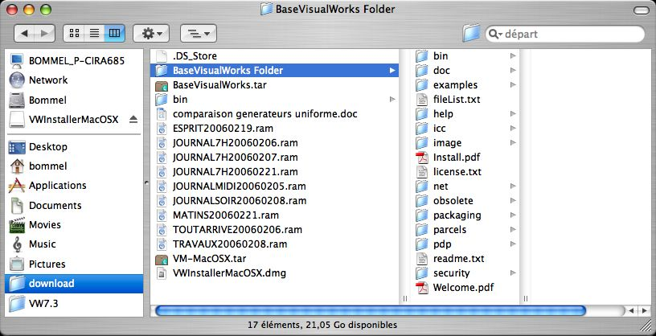
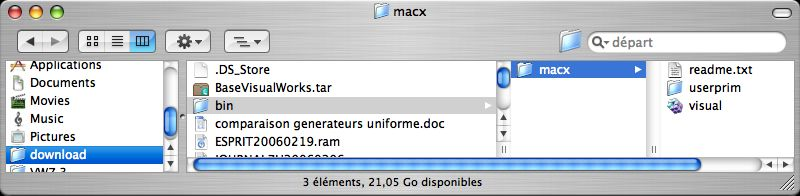
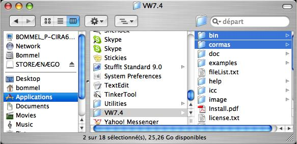
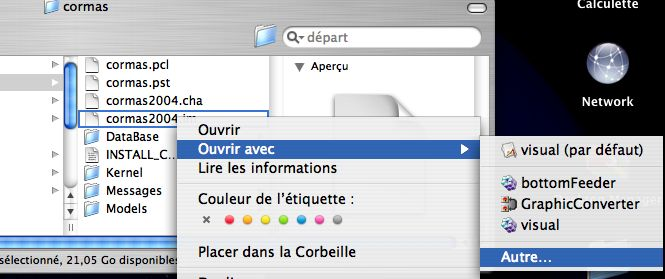
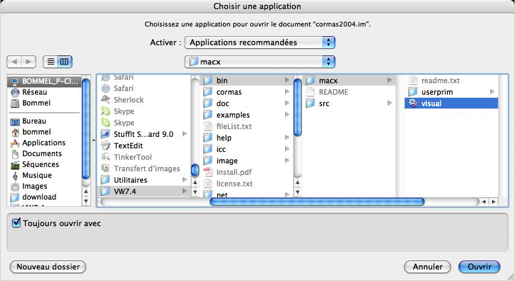
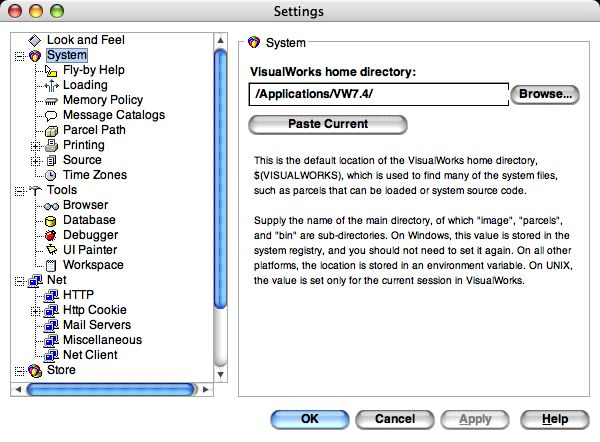
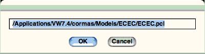

|
Installation complète de Cormas2004 
Version de Décembre, 2006
Cette page explique la procédure complète d'installation
de Cormas. Si vous avez déjà installer une version de Cormas
sur VW7, faite une simple mise à jour
de votre version.
La procédure se déroule en 2 temps : il faut installer
VisualWorks, le langage de programmation délivré gratuitement
par Cincom puis Cormas. Malheureusement, il nous est légalement
pas possible de fournir une version tout-en-un comprenant VW et Cormas.
Première étape: installation de VisualWorks
Télécharger VisualWorks 7.4
Tout d'abord, vous devez télécharger la version non-commercial
de VisualWorks 7 sur le site web de Cincom. Vous trouverez tous ces fichiers
ici (légalement, nous ne pouvons les délivrer nous-mêmes):
http://www.cincom.com/scripts/smalltalk.dll//downloads/index.ssp?content=visualworks
Vous pouvez installer VisualWorks à partir de fichiers individuels
(individual files) ou par un installer (Net Installer), mais malheureusement
cette deuxième solution ne fonctionne pas pour le moment... Nous
décrivons donc ici la procédure pour installer VW à
partir des fichiers individuels.
Vous devez télécharger :
- le fichier correspondant à votre système d'exploitatoin
: Virtual Machine for Mac OSX (step 1). Il y a 2 possibilités
:
- le fichier classique : Virtual Machine for Mac OS X (le plus facile),
ou
- le fichier "Virtual Machine based on X11" (dans ce
cas vous devez avoir installé X11 auparavant. L'installation
est légèrement plus compliquée, mais VW tourne
un peu plus rapidement)
- Le fichier "Base VisualWorks parcels and virtual image"
du step 2 : BaseVisualWorks.tar (115.8 Mo, c'est le fichier principal).
Il est automatiquement dézippé en "BaseVisualWorks
Folder"
- Un ensemble de composants optionels. Plus particulièrement
:
- Database Connect
- DLL & C Connect
- Internationalization
Installer et paramètrer VisualWorks 7.4
- Le fichier BaseVisualWorks.tar est automatiquement dézippé
:
- "BaseVisualWorks Folder" :

- Renommer ce répertoire "VW7.4" et déplacer
le dans le répertoire "Applications".
- Dézipper le fichier VM-MacOSX.tar.
- Un répertoire "bin" est créé :

- Déplacer le contenu de "bin" (cad "macx")
dans Applications/VW7.4/bin/
Seconde étape: installation de Cormas2004
Télécharger Cormas
- Tout d'abord, vous devez télécharger le fichier installCormas.zip
(8 Mo),
- normallement, le fichier installCormas.zip est automatiquement dézippé
en un répertoire /cormas/ (si non, dézipper le)
- déplacer ce répertoire «cormas» dans Applications/VW7.4/.
- finallement, vous devriez avoir l'architecture suivante :

Lancer VisualWorks
- Aller dans le répertoire cormas (Applications/VW7.4/cormas/)
et selectionner le fichier Cormas2004.im
- click droit et choisisser "Ouvrir avec ... Autre..."

- Naviguer alors pour choisir le fichier d'association : Applications/VW7.4/bin/macx/visual
:

Ouvrir Cormas
- Lorsque VW7 est ouvert, vérifier que le chemin est correct
:
- dans la fenêtre de "VisualWorks Launcher", clicker
sur le 3ième bouton
("Edit the system options") puis sélectionner l'onglet
"System"
- Le chemin (VisualWorks home directory) doit être : /Applications/VW7.4/

(Sinon alors changer ce chemin et faire "Apply". Puis
sauver votre image VW)
- Dans le menu principal de VisualWorks, sélectionner :
Tools --> Cormas --> Cormas Français
Si, lorsque vous ouvrez un modèle, l'explorateur
de fichier ne fonctionne pas, vous devez écrire le nom du fichier
(et son chemin) que vous voulez ouvrir :

Ce bug a été corrigé par VW7.4. Si
vous avez déjà installé VW7.4 mais que ce problème
apparait encore, ré-installé Cormas:
- copier le fichier visual.im, depuis le répertoire VW7.4/image/
vers VW7.4/cormas,
- charger la parcel Cormas (la procédure est décrite
ici),
- sauver votre nouvelle image : cormas.im
Tester vos modéles
Essayer de manipuler le modèle ECEC
en suivant les instructions pas à pas.
Nous vous invitons à essayer les didactitiels
Vous pouvez aussi tester d'autres modèles comme TSE,
PlotsRental, JLB
ou Conway.
Un tableau des bugs et des ajouts
est mis à jour régulièrement.
Forum Cormas
Nous vous invitons également à rejoindre
la liste Cormas@cirad.fr.
|
|